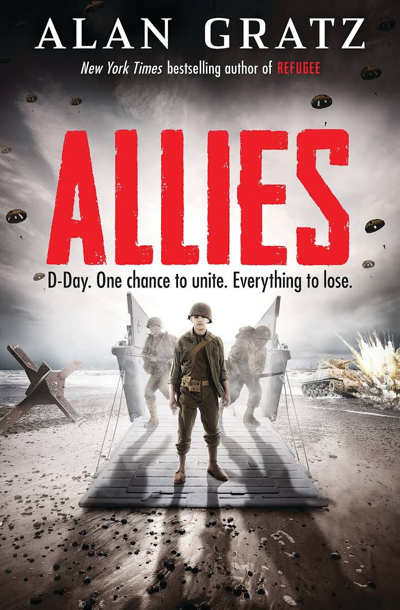
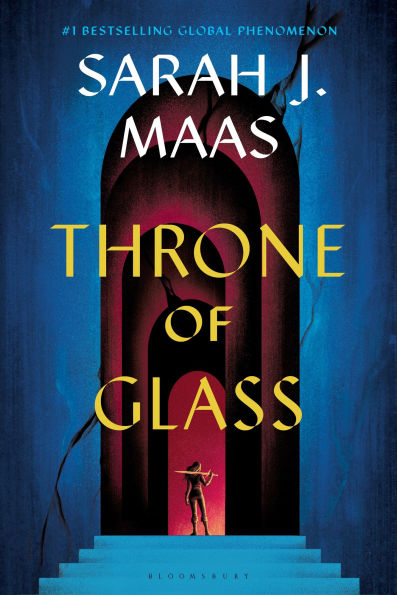

Fiction Books
Allies By: Alan Gratz

- Reasons Why I like it:
- Several different perspectives from people from different countries and backgrounds
- Fast-Paced and Action Packed
- Pretty historically acurate for a fiction book
| Allies |
| 336 Pages |
57 Chapters |
| Released in 2015
|
Throne Of Glass By: Sarah J. Maas

- Reasons Why I like it:
- Follows several different characters in an intertwined storyline
- Fast-Paced and Action Packed
- Really good world building
| Throne Of Glass |
| 432 Pages |
55 Chapters |
| Released in 2012
|